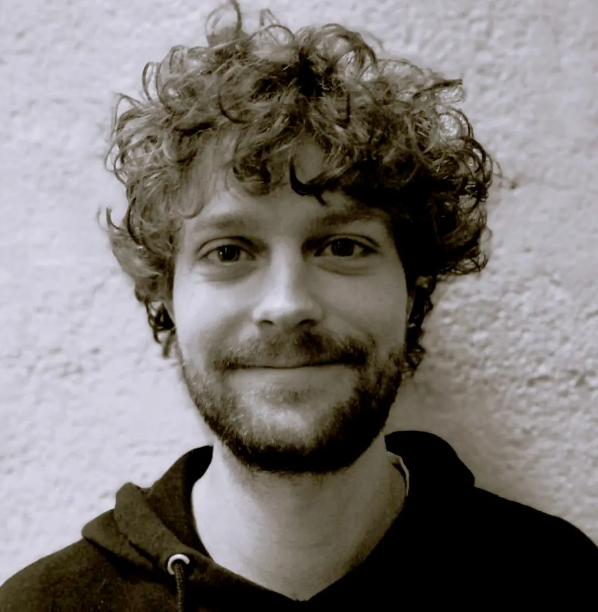

Titulaire d'un diplôme d'ingénieur en Electronique/Numérique ainsi que d'un master en Sound Design, j'aime considérer les ondes sonores tant au travers de leur nature technique que de leur capacité à nous émouvoir.
Mon expertise s'est développée au travers de nombreux projets et collaborations comme, par exemple, avec l'Opéra de Paris, la Bibliothèque Nationale de France ou encore le Hong Kong Art Festival.
Que ce soit pour des films, des jeux vidéo, des installations interactives ou des expériences immersives, mon objectif est de donner vie aux projets par le son, avec créativité et précision technique.
Avec une approche sur mesure, je m'engage à réaliser des créations sonores qui enrichissent l'impact de chaque projet. Je vous invite à explorer mon portfolio pour découvrir mes travaux, et plonger dans un monde où chaque son compte.